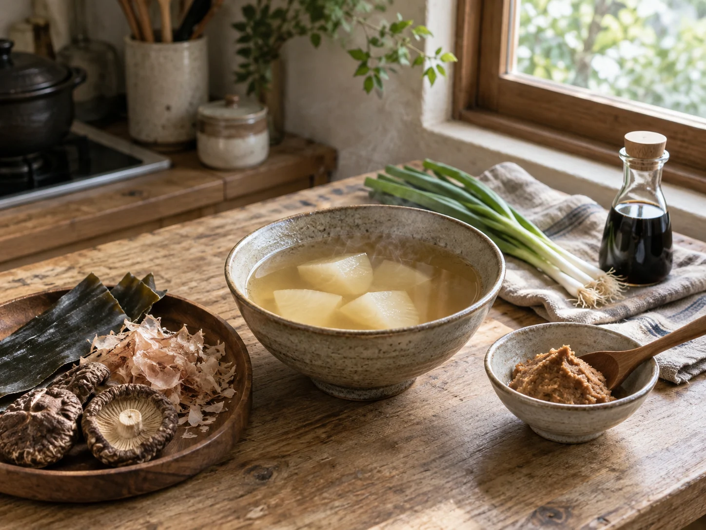

AKOMEYA TOKYO 鹽麴
以岩手縣產米、酵素與天日鹽慢慢發酵，甘味與鹹味均衡，香氣柔和圓潤。
180g
醃漬肉類使口感柔嫩，也可與美乃滋或油調成沾醬。
¥670日本官方含稅參考價
fréa 售價尚未設定
fréa 售價尚未設定
從 AKOMEYA TOKYO 到茅乃舍，fréa 挑選適合日常使用的食材、高湯與調味料。留意風味，也在意如何使用，讓每一份選物都能自然走進家裡的廚房。

從一鍋湯、一匙調味開始，把喜歡的滋味帶回日常餐桌。
忙碌的日子裡，也想好好吃一頓飯。讓高湯慢慢煮出香氣，替剛起鍋的料理添一點滋味，幾樣順手的食材與調味，就能陪我們把一餐準備好。
不論是一個人的晚餐，或與家人共享的一桌菜，都從今天想吃的那一味開始。
閱讀品牌介紹找到適合自家餐桌的食材與調味。
正在讀取最新商品資料…
以岩手縣產米、酵素與天日鹽慢慢發酵，甘味與鹹味均衡，香氣柔和圓潤。
醃漬肉類使口感柔嫩，也可與美乃滋或油調成沾醬。

將昆布與香菇的鮮味濃縮進鹽中，是六助鹽最具代表性的基本款。
適合飯糰、烤物與日常調味，簡單使用即可增加鮮味。

選用大分縣紫蘇與九州青辣椒製成，香氣清新，辛味俐落。
搭配鍋物、肉料理、烤雞串或味噌湯作為辛香佐料。

木桶釀製的柔和甘味，加入鰹魚、昆布與飛魚高湯，採方便使用的軟管包裝。
加熱水即可沖成味噌湯，也適合炒物或作為沾味噌。

嚴選原料並熟成一年以上，柚子香氣鮮明，辛味較柔和而有深度。
適合麵類、鍋物、湯品、刺身，亦可加入沙拉醬增添香氣。

100% 使用北海道大豆，連皮細火焙炒，保留濃郁豆香與完整風味。
可搭配年糕、糰子、優格，或加入牛奶製作黃豆粉飲品。

以粉末醬油、昆布、柴魚、香菇與山椒為基底，加入蒜與芫荽等香辛料。
適合肉、魚、炸物下味及各式料理，和風鮮味用途廣泛。

融合二十多種香料與調味料，以鹽、醬油和蒜香形成平衡的和風辛香。
肉、魚、蔬菜皆適用，露營燒烤或家庭料理都方便。

加入蒜香的鹽胡椒，風味直接鮮明，是簡單料理的實用調味。
適合烤雞串、燒肉、炒蔬菜、炸雞及各式食材下味。

模擬粗目磨泥的香氣與辛味，帶爽脆顆粒感，風味接近現磨山葵。
搭配刺身、牛排、燒肉、烤雞或蕎麥麵皆合適。

使用非洲原產小粒唐辛子焙煎研磨，辛度約為一般一味的三倍，尾韻清爽俐落。
少量加入麵食、湯品、鍋物或燒烤，增添明快辛香。

醬油、油與堅果分別燻製後調和，呈現濃厚煙燻香與堅果顆粒的滑順口感。
適合沙拉、冷涮肉與棒棒雞等肉類料理。

以烤飛魚、鰹魚節、圓腹鯡與真昆布調和的經典和風高湯包。
味噌湯、煮物、蒸蛋、麵類湯底，亦可拆袋作為日常調味。

凝縮五種國產蔬菜甘味與香氣、不使用動物性原料的清爽西式高湯。
蔬菜湯、義大利麵、咖哩、蛋料理與醬汁，亦可拆袋直接調味。

以燻製國產雞削節搭配干貝、生薑與蔥，呈現溫和而有層次的中式風味。
中式湯品、粥、炒飯、麻婆豆腐及各式炒物，亦可拆袋調味。

以海鹽加入鰹魚節、圓腹鯡、烤飛魚與真昆布，呈現溫潤鮮味的和風調味鹽。
和食調味、飯糰、炸物與蔬菜的沾鹽或撒鹽。

將海鹽、粗磨黑胡椒與香辛料調和，鹹香俐落，簡單一撒即可帶出食材風味。
肉類、魚類與蔬菜的煎烤、燒烤及日常調味。

以烤飛魚、鰹魚與本枯鰹節調出鮮香，搭配青海苔與芝麻的即沖湯品。
加入熱水即可享用，適合作為早餐、點心或餐桌湯品。

融合蔬菜與干貝鮮味、洋蔥自然甘甜，呈現柔和洋蔥湯風味。
加入熱水即可享用，適合作為早餐、點心或西式餐點佐湯。

結合雞肉、干貝、香菇與洋蔥鮮味，佐以生薑、蔥與芝麻油增添香氣。
加入熱水即可享用，適合作為早餐、點心或中式餐點佐湯。
AKOMEYA TOKYO 從一碗剛煮好的米飯出發，蒐羅日本各地的米、調味料、食品與料理器具，讓一餐之中的每個選擇都更有來處。
品牌希望擴展日本飲食的可能性，連結製作者與使用者，讓地方素材、手藝與飲食文化在每日餐桌上持續流動。
以日本米為原點，延伸探索能襯托主食與四季餐桌的各種美味。
將日本各地製作者的素材、技術與故事，帶進更多人的日常生活。
透過選品支持地方與手藝，讓好食物被理解、使用並延續下去。
茅乃舍的起始店「久原本家」，源自 1893 年在福岡久原村、今日久山町開設的小型醬油釀造坊。歷經百餘年，始終在福岡製作調味料，累積對發酵、素材與滋味的理解。
後來，久原本家在福岡里山開設「御料理 茅乃舍」，以當令食材、地方飲食智慧與不急於求成的料理方式為核心。從料理店客人希望在家也能重現滋味的心聲出發，逐漸發展出茅乃舍高湯與各式調味料，讓講究的味道更容易走進日常。
品牌的料理哲學扎根於久山町的自然環境，重視四季流轉，以及地方所保存的飲食智慧。
選擇合適的素材，以時間和工夫引出原有風味，讓調味成為襯托，而不是掩蓋。
將料理店累積的經驗轉化為方便使用的高湯與調味料，讓一頓家常飯也能保有細緻層次。